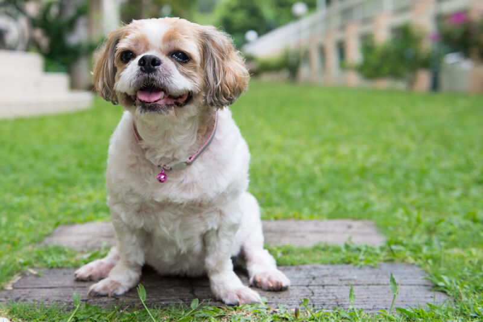

Que tal um amigo fofinho e super alegre? Conheça mais sobre a raça! Tutores que procuram por um novo amigo de quatro patas vão amar ter um cachorro Shih Tzu como companhia. Famoso pela fofura e pela beleza dos pelos alongados, ele se adapta muito bem à família humana, já que gosta de dar e receber carinho e é muito animado. Esse cãozinho não precisa de muito espaço, portanto, pode viver tranquilamente em lares menores, como apartamentos. Isso não impede que ele possa ser criado em casas grandes, com quintais, por exemplo. A versatilidade e o fato de ser um bichinho que se acostuma facilmente a diferentes tipos de ambientes, faz desta raça uma das mais queridas! Esse cãozinho não precisa de muito espaço, portanto, pode viver tranquilamente em lares menores, como apartamentos. Isso não impede que ele possa ser criado em casas grandes, com quintais, por exemplo. A versatilidade e o fato de ser um bichinho que se acostuma facilmente a diferentes tipos de ambientes, faz desta raça uma das mais queridas!
O cão da raça Shih Tzu tem o focinho achatado, ou síndrome braquicefálica, o que pode prejudicar a respiração em atividades físicas com movimentações mais intensas. Nos dias de calor, frio e umidade excessivos, esse problema tende a piorar e deixar o animal ainda mais sensível. Ele também é frágil e não possui muita força muscular. Além disso, não é tão enérgico, o que faz com que os exercícios físicos constantes não sejam tão necessários. Contudo, é bom ficar de olho para evitar problemas de sedentarismo.
Trata-se de um cão com sentido de alerta mais aguçado, isso significa que ele vai latir muito e por diferentes razões. Nesse caso, o mais recomendável é tratar esse aspecto com as lições do próprio adestramento. A socialização com outros animais é quase que instintiva. Ele vai ser dócil e tranquilo com um cão de raça distinta, porém, isso não elimina a necessidade de habituação ainda quando filhotinho, assim como acontece com qualquer animal.
Fizemos um gráfico nivelando de 0 a 5 as características da raça, veja a baixo!
RA aparência desse cachorrinho é muito popular, e não é para menos. O formato do rosto e as características da pelagem sempre determinaram detalhes, como o próprio nome dele, ao longo da história. A coloração é variada, com tons de preto, marrom e branco entre os mais populares. Com porte pequeno, o Shih Tzu tem aspecto corporal mais robusto e levemente comprido. Tanto a cabeça como a cauda são empinadas e dão um ar de confiança ao bichinho. Ele possui pelos mais longos no topo e densos na parte de baixo. Também tem olhos grandes e arredondados, que encantam qualquer tutor.
Os banhos semanais são recomendados para o Shih Tzu, utilizando produtos indicados pelo veterinário para evitar complicações na pele e pelos. Produtos de higiene humana não devem ser usados, pois podem prejudicar a saúde do animal. Cuidados comuns incluem atenção especial à saúde respiratória devido ao focinho achatado, prevenção da coprofagia com auxílio veterinário, limpeza regular dos ouvidos para evitar infecções, e controle da dieta para prevenir a obesidade, promovendo uma vida ativa.

O filhote de Shih Tzu nasce com o nariz rosa, isso acontece por conta da despigmentação natural dessa fase da vida, e também é aparente no entorno dos olhinhos. A coloração só ganha força após os primeiros 60 dias de vida. Cada ninhada pode ter de três à cinco filhotinhos. Durante os primeiros meses, eles precisam de cuidados especiais, sob acompanhamento profissional. Por isso, é fundamental saber se o peludinho a ser adotado foi vacinado e vermifugado adequadamente.